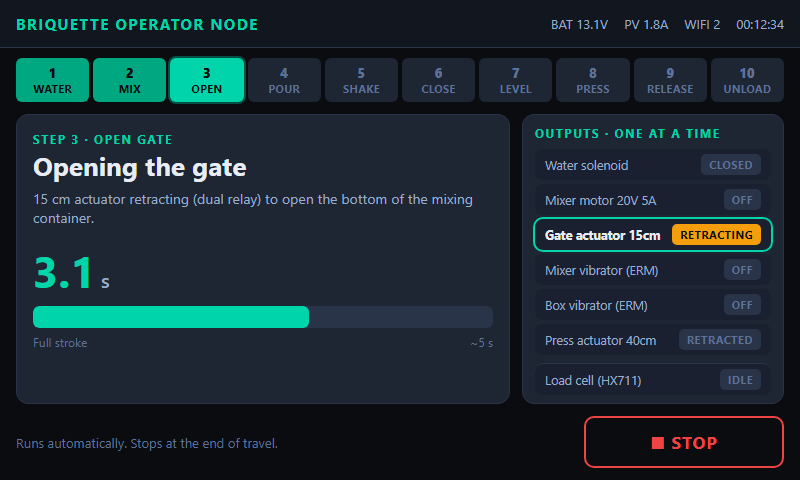
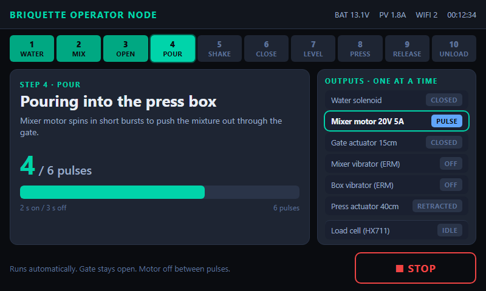
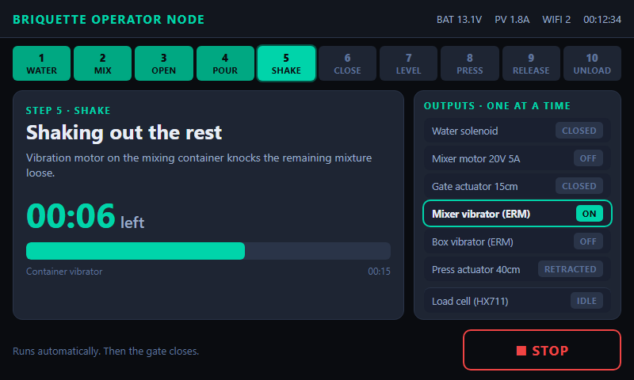
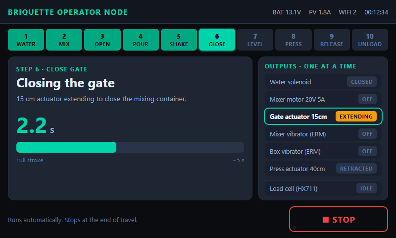
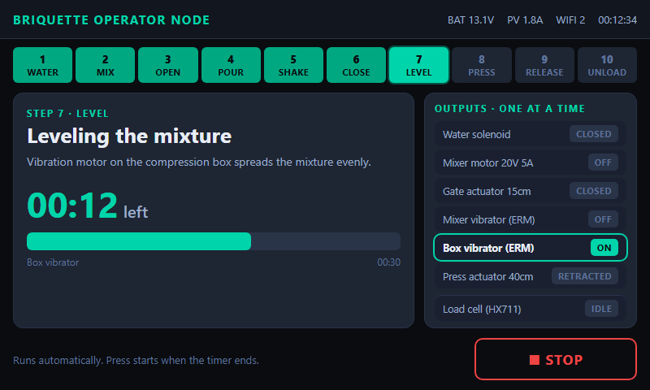
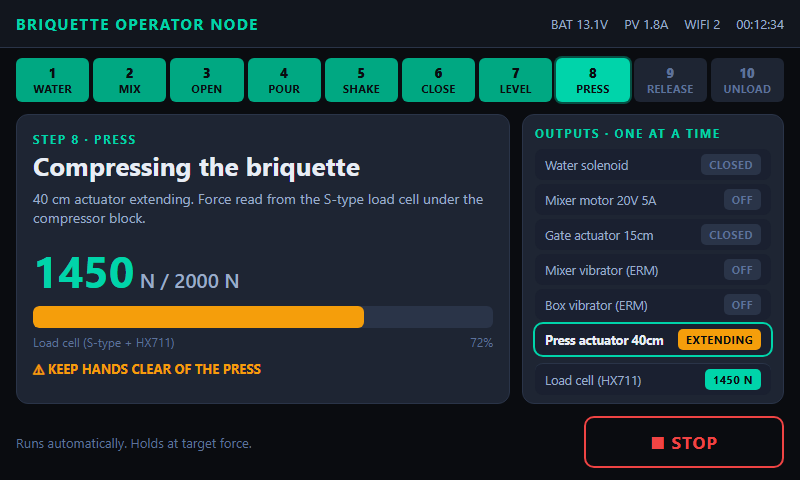
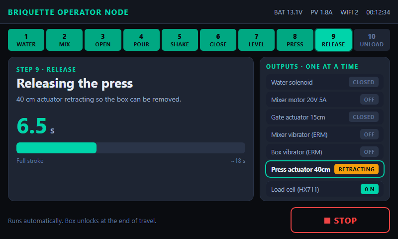
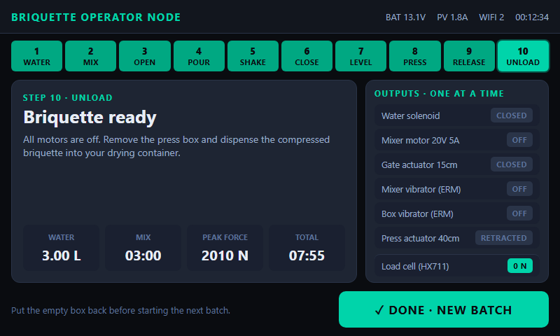

NEXTION 7" HMI · BATCH FLOW (800×480)
One machine action at a time: exactly one motor or actuator runs per step. STOP on every running step.
 Setup 1: load paper, choose water level (preset 100%)
Setup 1: load paper, choose water level (preset 100%)
 Setup 2: paper card slides left, load charcoal, START
Setup 2: paper card slides left, load charcoal, START
 1. Water: solenoid only
1. Water: solenoid only
 2. Mix: 20V 5A mixer motor only
2. Mix: 20V 5A mixer motor only

3. Open gate: 15cm actuator retracts only

4. Pour: mixer motor pulses only

5. Shake: mixer vibrator (ERM) only

6. Close gate: 15cm actuator extends only

7. Level: box vibrator (ERM) only

8. Press: 40cm actuator extends, load cell reads force

9. Release: 40cm actuator retracts only

10. Unload: all off, dispense into drying container
Stop / fault: all relays off, reset and retract